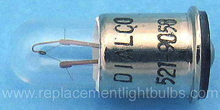
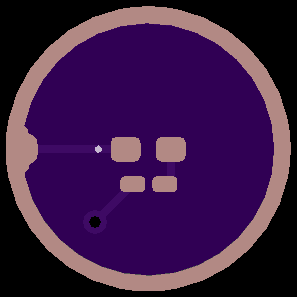
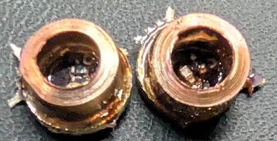
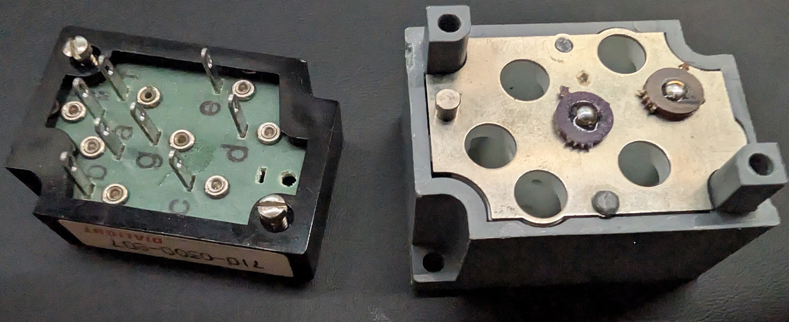
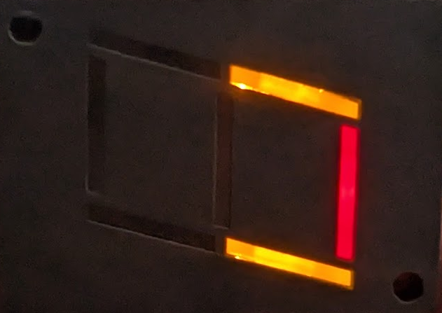

This project was spawned by the idea surrounding an item I picked up in a 2nd hand / surplus store, which was the (according to the label) a 710-0300-807 from Dialight. What I found fascinating about this, is the electro-mechanical interfacing, as each bulb is held in place with a spring, with a lugAfter digging around on the internet, I found some bulbs for sale, but they were on the order of $5 each (PN: Dialco 521-905A).
Additional reading here, as it claims it all can be done with a simple 5mm LED bumb. In this case however, there is still approximately a 1mm gap here. I did not find this very pleasing, as it did not feel like a complete picture in terms of reproducing something that could end up acting like the original bulbs.

After a little bit of measuring, I ended up creating a circuit board that *would work* however was potentially too small to be manufactured, let alone too small to be used with a standard pick and place shop (without going to incredibly expensive processes). End result seen at my git repo, but it ended up being a 4x result of the original for ease of manufacturing and if I were to get it assembled, it would be able to be doen by cheaper CMs. For the PCB vendor, I usually use OSH Park, just as they've rarely done me wrong. However this was the first time I found an issue with their manufacturing / website viewer.

Assembly of these boards is very straight forward. It consists of 1 0402 Resistor, 1 0402 LED, the ring, and a solder blob on the rear of the board, where the spring loaded mechanism mates. Below are two samples, but as can be seen, the rings are not exactly centered correctly. Items are further discussed later as to assembly, and the copper rings.

In the below picture, the website displayed the outside ring, which is being used to solder down a copper right, to provide proper guidance into the channels, and to ensure that a conductive material is being used in case the part slides, and needs to catch on the metal piece, that is a common electrical plane for the light bulbs. In this particular revision of the board, it was manufactured without this copper ring at all. The modern github version has some gross pads that were placed down on the exterior, as it seemed to have convinced the OSH Park software to actually manufacturer it appropriately.

Now one thing that has yet to become easier, is finding both A: a good way to position the copper ring, and B: a good source for these copper rings. I found a source for some copper gaskets, but they did not end up soldering down correctly, and were overall quite expensive on a per unit basis. The current bill of materials costs approximately (without the copper tubing talked about later) is $9.35 / 15 sets, of 4. So PCB cost at this vendor, for this particular "product" was $0.4625 for the board. For the particular LEDs used, and the single resistor used, it (in single unit quantities) was $0.54. Conveniently enough, this was approximately $1 per. I did end up acquiring a 6.35mm HVAC tubing at 2m long for $18. Each piece that was cut with an HVAC tube cutter, is approximately 2.5mm tall, so each individual piece was approximately 2.25mm, excluding my labor cost. So overall, in this run, each unit costs about $1.02. Dramatically less than the $7 each. Based on this photo, the yield is still not very good. Improvements still need to be done for further reliability, as 4/7 in this photo did not light up. TBD!
